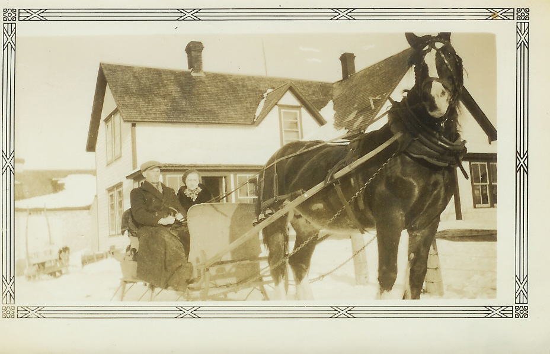

The Family Chronicle
No.72 May 29, 2004
__________________________________________________________________________________

Venetia and Walter Glendenning taken in 1935 at Little Branch. Would the horse be Prince?
Hotel in Little Branch
While visiting the Miramichi recently, Teddy Fowlie mentioned that there had been an inn up the Little Branch River at the Forks. Presumably it was an overnight stop for travelers. It could even have been a mail stop
Doring
My father’s oldest sister, Venetia, married Bob Doring. They had three children. John, Glenn and Verna. Their obituaries follow:
The Hardee County Herald of October 22 1954 reported the following death of
John S. Doring Buried Wednesday
Last rites for John S. Doring, 45, were conducted at Coker’s Funeral Chapel Wednesday afternoon by Rev. Ed. Norman.
Doring died of a heart attack at his residence in Bowling Green late Sunday afternoon. Originally of Ontario, Canada, he lived in this section since 1916 and was affiliated with his brother in operating Doring Tractor and Implement Company in Wauchula Hills. He was an Army veteran of World War ll and a member of the Bowling Green Masonic Order.
Survivors include his mother, Mrs. V. G. Doring; one brother, W. D. Doring and sister, Miss. Verna Doring, all of Bowling Green.
Serving as pallbearers were Jesse Allbritten, Arlis Moye, Clifford Smith, B. J. Johnson, Dutch Hrabal and Houstan Durrance.
Burial was in the Bowling Green Cemetery with Masonic service at graveside.
The Herald Advocate April , 1981 reported the following:
Walter G. Doring
Walter Glendenning Doring, 77, of Bowling Green died April 5 at his residence.
Doring was born on April 30, 1903 in Lewiston, Ma. but was a resident of this area since 1914. He was a carpenter, a veteran of World War ll and a member of the Bowling Green Masonic Lodge.
He is survived by his sister, Miss Verna Doring of Bowling Green.
Graveside services were held Tuesday afternoon at the Bowling Green Cemetery with the Rev. John Springer officiating.
The Herald Advocate of September 18, 1997 reported the following:
Verna Elizabeth Doring, 92, of Bowling Green died Wednesday, Sept. 10, 1997, at Hardee Manor Care Center.
She was a native of Gorham, N.H., and a resident of this area for over 30 years. She was a nurse and a World War II U.S. Army veteran serving in the nursing corps.
Survivors are one cousin Robert Glendenning of Chestertown, Md.
Graveside services will be held at a later date.
Curry Raley Funeral Home - Wauchula
Follow-up
The forker arrangement was quite simple but effective. Two hooks, like ice tongs, were used to fasten pulleys to rafters. The forkful of hay rose almost straight up and locked into a carrier which carried the hay sideways over the mow before being dropped. The hooks in the rafters could be changed with the aid of a long, slim pole, the forker pole, to allow the hay to go either right or left – to the mow or to the loft. Another pulley was fastened near the ground where the horse was used to raise the load.
Donald Edge remembers riding up to the rafters on a bare hay fork then dropping to the hay in the mow below. He also noted that the Miramichi fire of 1825 devastated Little Branch but that the remainder of Black River was quite unscathed. Donald and Vera Watling, and Earl and Mary Edge, used to camp and picnic at the Meadows.
Art Mills added the following information about the original Mills grant in Hardwicke:
“The land grant is in original form including part of the Kings seal (wax).
Uncle Andrew Mills held this document until his death. The seal is currently 3" by 1.5"; it was round. Uncle Andrew explained "when the family had a very important letter to send, they would cut off some of this fine wax to seal "thus the strange shape and smaller size”.
St. Stephen’s Report
Statistics for St. Stephen’s Presbyterian church for 1915 includes an Honour Roll of members serving with the armed forces:
From Black River:
Joseph Finno 1st Con.
Archie Watling 1st Con.
Herbert MacDonald 1st Con.
Ernest Watling 2nd Con.
Alex. MacNaughton 2nd Con.
Ernest Williston 2nd Con.
James Palmer 2nd Con.
Leslie Cameron Not passed
Stephen Dick Dalhousie Medical Corps
J. Archie MacNaughton 104th Batt.
Walter MacDonald 104th Batt.
James Adams 104th Batt.
Lt. F.F. Fowlie 132nd Batt.
Lt. Arch M Cameron 132nd Batt.
George H. MacLean 132nd Batt.
Robert Godfrey Home Service
Major A. S. Cameron Home Service
Lt. A. S. MacNaughton Home Service
From Napan:
Bernard MacDonald 55th Batt.
Douglas Lockerbie 132nd Batt
Peter Thompson 132nd Batt.
Ben Thompson 132nd Batt.
The Chronicle is an occasional newsletter prepared by Don Glendenning and posted on the family website. It is designed to share information about my family, community and the times in which I grew up. While every effort is made to be accurate, errors are likely to occur. Comments, enquiries and information may be sent to 62 Queen Elizabeth Drive, Charlottetown, PEI, C1A 3A9. Tel: 902-892-5859 Email: don@glendenning.net Web: www.glendenning.net